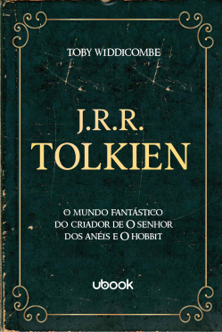

Um romance sobre as escolhas corretas nas situações mais difíceis. As coisas não foram sempre fáceis para Lily, mas isso nunca a impediu de conquistar a vida tão sonhada. Ela percorreu um longo caminho desde a infância, em uma cidadezinha no Maine: se formou em marketing, mudou para Boston e abriu a própria loja. Então, quando se sente atraída por um lindo neurocirurgião chamado Ryle Kincaid, tudo parece perfeito demais para ser verdade. Ryle é confiante, teimoso, talvez até um pouco arrogante e se sente atraído por Lily. Porém, sua grande aversão a relacionamentos é perturbadora.

Muitas garotas sonham em ser princesas, mas este não é o caso de America Singer. Ela topa se inscrever na Seleção só para agradar a mãe, certa de que não será sorteada para participar da competição em que o príncipe escolherá sua futura esposa. Mas é claro que depois disso sua vida nunca mais será a mesma...
Para trinta e cinco garotas, a Seleção é a chance de uma vida. É a oportunidade de ser alçada a um mundo de vestidos deslumbrantes e joias valiosas. De morar em um palácio, conquistar o coração do belo príncipe Maxon e um dia ser a rainha.
Para America Singer, no entanto, estar entre as Selecionadas é um pesadelo. Significa deixar para trás o rapaz que ama.

Embarque numa viagem inesquecível para a Terra-média e tenha os três livros de O Senhor dos Anéis, a obra-prima de J.R.R. Tolkien e um dos maiores clássicos da fantasia, em edições de luxo com capa dura neste box de colecionador!
Apesar de ter sido publicado em três volumes – A Sociedade do Anel, As Duas Torres e O Retorno do Rei – desde os anos 1950, O Senhor dos Anéis não é exatamente uma trilogia, mas um único grande romance que só pode ser compreendido em seu conjunto, segundo a concepção de seu autor, J.R.R. Tolkien.
O Deus cristão não pode ser domesticado Uma tentação constante que cerca a vida cristã é a inversão do chamado: a presunção de que Deus precisa abençoar o meu caminho e me seguir em meus planos e sonhos. Essa postura é enganosa e faz parecer que Deus só é fiel quando me abençoa. Mas e se Deus derrubar o meu sorvete, ele deixa de ser fiel? Claro que não. Às vezes, ele só quer chamar a minha atenção para o caminho certo. Eu já testemunhei gente adulta se comportando como criança por não ter a vida que pediu a Deus.Pediu errado! Neste livro, apresento o caminho do discipulado, o caminho para "sonhar" o que Deus já planejou.